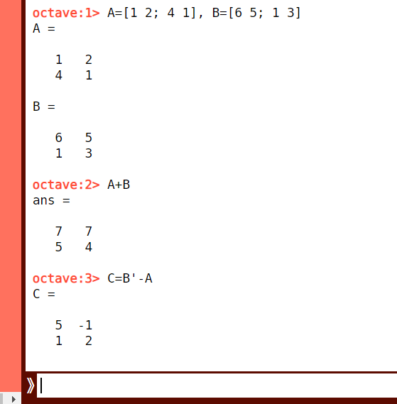

Laskuja matriiseilla
Contents
Laskuja matriiseilla#
Matriisien peruslaskutoimituksiin kuuluvat matriisien yhteen- ja vähennyslasku sekä matriisin kertominen luvulla. Aivan kuten vektorienkin tapauksessa, matriisien kertominen toisella matriisilla on monimutkaisempi laskutoimitus ja käsitellään erikseen. Matriisien laskutoimitukset sujuvat helposti matriisilaskentaan erikoistuneella Octave-laskentaohjelmalla, johon myös tässä luvussa tutustutaan hieman. Laskentaan voi toki hyvin käyttää myös esimerkiksi Pythonin lineaarialgebran työkaluja.
Summa ja luvulla kertominen#
Matriiseja voidaan laskea yhteen tai vähentää toisistaan, jos ne ovat samaa tyyppiä. Laskutoimitukset tehdään vastinalkioittain, eli kummankin matriisin samalla rivillä ja samassa sarakkeessa oleville alkioille. Matriisien \(A\) ja \(B\) summan \(C=A+B\) alkio \(C_{ij}\) on siis matriisien \(A\) ja \(B\) vastaavien alkioiden summa, \(C_{ij}=A_{ij}+B_{ij}\). Vastaavasti erotukselle \(C=A-B\) pätee \(C_{ij}=A_{ij}-B_{ij}\).
Minkä tahansa kokoinen matriisi voidaan kertoa reaaliluvulla. Tällöin matriisin jokainen alkio kerrotaan kyseisellä luvulla. Matriisien jakaminen luvulla voidaan myös esittää kertolaskuna, jossa kertoimena on käänteisluku siitä luvusta, jolla matriisin alkiot jaetaan. Esimerkiksi jos matriisin \(A\) kaikki alkiot halutaan jakaa luvulla 4, niin tarvittava laskutoimitus on \(\frac{1}{4} A\).
Esimerkki
Olkoon \(A=\begin{bmatrix}2&-3&5\\0&2&1\end{bmatrix}\) ja \(B=\begin{bmatrix}1&7&2\\3&-2&4\end{bmatrix}\). Laske \(A+B\) ja \(3A\).
Ratkaisu
\(A+B=\begin{bmatrix}2+1&-3+7&5+2\\0+3&2-2&1+4\end{bmatrix}=\begin{bmatrix}3&4&7\\3&0&5\end{bmatrix}\) ja
\(3A=\begin{bmatrix}3\cdot 2&3\cdot (-3)&3\cdot 5\\3\cdot 0&3\cdot 2&3\cdot 1\end{bmatrix}=\begin{bmatrix}6&9&15\\0&6&3\end{bmatrix}\).
Matriiseille on määritelty myös alkioittainen tulo eli Hadamardin tulo. Sitä merkitään matriisien välisellä ympyrällä \(A\circ B\). Matriisien \(A\) ja \(B\) alkioittaisen tulon \(C= A \circ B\) alkio \(C_{ij}\) on matriisien \(A\) ja \(B\) vastaavien alkioiden tulo, \(C_{ij}=A_{ij}\cdot B_{ij}\). Koska laskutoimitus tapahtuu vastinalkioittain, niin Hadamardin tulon voi laskea vain kahdelle samaa tyyppiä olevalle matriisille. Tätä laskutoimitusta tarvitaan melko harvoin. Yleisempi matriisien kertolasku, matriisitulo, opetellaan seuraavassa luvussa.
Esimerkki
Laske matriisien \(A=\begin{bmatrix}2&-3&5\\0 & 2 & 1\end{bmatrix}\) ja \(B=\begin{bmatrix}1&7&2\\3 & -2 & 4\end{bmatrix}\) alkioittainen tulo.
Ratkaisu
\(A \circ B=\begin{bmatrix}2\cdot 1 & -3\cdot 7 & 5\cdot 2\\0\cdot 3 & 2\cdot(-2) & 1\cdot 4 \end{bmatrix}=\begin{bmatrix}2 & -21 & 10\\0 & -4 & 4\end{bmatrix}\)
Esimerkki
Selvitä puuttuvat luvut seuraavista yhtälöistä:
a) \(\begin{bmatrix}2 & 3\\ x & 5\end{bmatrix}+2 \begin{bmatrix} 1 & y \\ 4 & 7\end{bmatrix}=\begin{bmatrix}a & 10 \\ 11 & b\end{bmatrix}\)
b) \(\begin{bmatrix}x & 1\\ 4 & y\end{bmatrix} \circ \begin{bmatrix} 2 & 5 \\ 3 & -2\end{bmatrix}=\begin{bmatrix}6 & a \\ b & 10\end{bmatrix}\)
Ratkaisu
a) Sievennetään aluksi yhtälön vasen puoli:
\(\begin{bmatrix}2 & 3\\ x & 5\end{bmatrix}+2 \begin{bmatrix} 1 & y \\ 4 & 6\end{bmatrix} = \begin{bmatrix}2 & 3 \\ x & 5\end{bmatrix}+\begin{bmatrix}2 & 2y \\ 8 & 14\end{bmatrix}= \begin{bmatrix}4 & 3+2y \\ x+8 & 19\end{bmatrix}\)
Verrataan tätä yhtälön oikeaan puoleen:
\(\begin{bmatrix}4 & 3+2y \\ x+8 & 19\end{bmatrix}=\begin{bmatrix}a & 10 \\ 11 & b\end{bmatrix}\)
Koska matriisit ovat samat, niin vastinalkioiden pitää olla samat. Suoraan nähdään, että tulee olla \(a=4\) ja \(b=19\). Loput tuntemattomat saadaan ratkaisemalla yhtälöt:
\(3+2y=10 \Leftrightarrow 2y=7 \Leftrightarrow y=\frac{7}{2}\)
\(x+8=11 \Leftrightarrow x=3\)
b) Sievennetään jälleen ensin yhtälön vasen puoli:
\(\begin{bmatrix}x & 1\\ 4 & y\end{bmatrix} \circ \begin{bmatrix} 2 & 5 \\ 3 & -2\end{bmatrix} = \begin{bmatrix}2x & 3\cdot 5 \\ 4\cdot 2 & -2y \end{bmatrix} = \begin{bmatrix}2x & 5 \\ 12 & -2y\end{bmatrix}\)
Verrataan tätä yhtälön oikeaan puoleen:
\(\begin{bmatrix}2x & 5 \\ 12 & -2y\end{bmatrix}=\begin{bmatrix}6 & a \\ b & 10\end{bmatrix}\)
Koska matriisit ovat taas samat, niin vastinalkioiden pitää olla samat. Suoraan nähdään, että tulee olla \(a=5\) ja \(b=12\). Loput tuntemattomat saadaan ratkaisemalla yhtälöt:
\(2x=6 \Leftrightarrow x=3\)
\(-2y=10 \Leftrightarrow y=-5\)
Matriisilaskut tietokoneella#
Tässä osiossa tutustutaan lyhyesti Octave-laskentaympäristöön. Octavea voi käyttää selaimessa tai sen voi asentaa omalle tietokoneelle. Octaven käyttö on ilmaista. Se noudattaa pääosin samoja komentoja kuin erittäin laajasti käytetty Matlab.
Octaveen voi syöttää matriiseja siten, että matriisin alkiot kirjoitetaan hakasulkuihin. Matriisin riviä vaihdetaan puolipisteellä. Samalla rivillä olevien alkioiden väliin laitetaan pilkku tai välilyönti. Matriisin transpoosi saadaan kirjoittamalla matriisin nimen perään merkin ‘, esimerkiksi matriisin \(A\) transpoosin \(A^T\) saa komennolla A’. Kun matriisille antaa jonkin nimen, sitä voi käyttää nimellä kutsumalla myöhemmissä laskutoimituksissa. Jos matriisien tyypit eivät ole keskenään yhteensopivia ja laskua ei voida suorittaa, Octave antaa virheilmotuksen.
Esim. Matriisien \(A=\begin{bmatrix}1 & 2 \\ 4 & 1\end{bmatrix}\) ja \(B=\begin{bmatrix}6 & 5 \\ 1 & 3\end{bmatrix}\) laskutoimituksia:
Syötetään Octaveen matriisit komennolla: A=[1 2;4 1], B=[6 5;1 3]
Lasketaan \(A+B\) komennolla: A+B
Lasketaan \(B^T-A\) ja tallennetaan laskun tulos matriisiksi \(C\) komennolla: C=B’-A

Huom! Alkioittainen tulo \(A\circ B\) saadaan komennolla A.*B ja varsinainen matriisien kertolasku tapahtuu komennolla A*B
Matriisit tallentuvat Octaven käytön ajaksi muistiin. Jos haluaa poistaa jonkin matriisin, se tapahtuu komennolla clear, esimerkiksi “clear a” poistaa matriisin \(a\). Komento “clear” tai “clear all” poistaa muistista kaiken. Jos haluaa pyyhkiä taulun, jolla aiemmat laskutoimitukset näkyvät, se tapahtuu komennolla “clc”. Lähtökohtaisesti Octave tulostaa kaiken näkyviin. Jos haluaa vaikkapa tallentaa ison matriisin ilman, että se sotkee koko ruutua, tulee komennon perään laittaa puolipiste ; .
Octavessa voi kirjoittaa komentosarjoja ottamalla käyttöön tekstieditorin. Se onnistuu kirjautumalla käyttäjäksi esim. Google-tilin kautta. Tällöin voi ensin kirjoittaa kaikki haluamansa laskutoimitukset dokumentiksi, jonka kaikki komennot sitten lopuksi suorittaa kerralla. Vaativampi laskenta ja datan käsittely kannattaa suorittaa juuri tällä tavalla.
Huom! Opintojaksosta riippuen oppitunneilla saatetaan harjoitella myös Pythonin käyttöä laskennan välineenä. Pythonissa laskutoimitusten logiikka on hieman erilaista kuin matematiikan käsitteissä. Esimerkiksi matriisien alkioita numeroidaan eri tavalla (rivien ja sarakkeiden laskeminen aloitetaan nollasta).